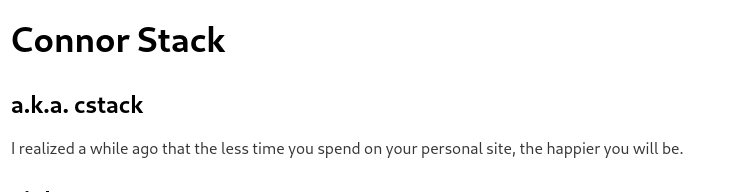

Nasihat yang menampar
15/8/23Tadi siang saat saya meluangkan waktu untuk mencari referensi untuk personal site saya, saya menemukan hal menarik
Bener bener kerasa banget sama keadaan saya saat ini, terlalu sibuk ngurusin tampilan websiteku.
ya mungkin saat ini saya rehat sejenak dulu.